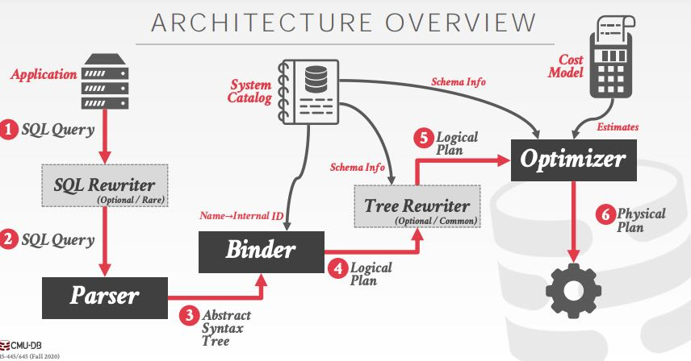
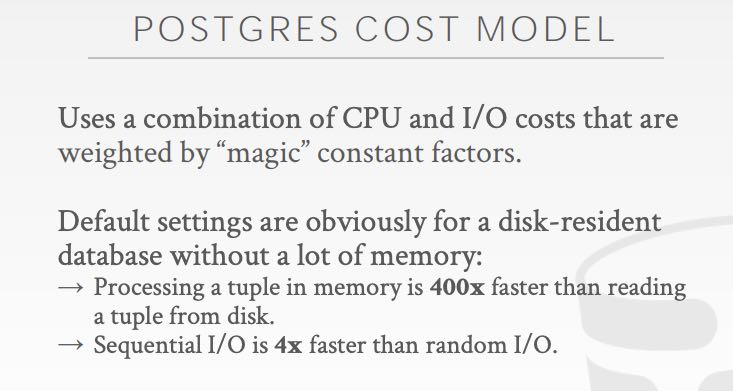
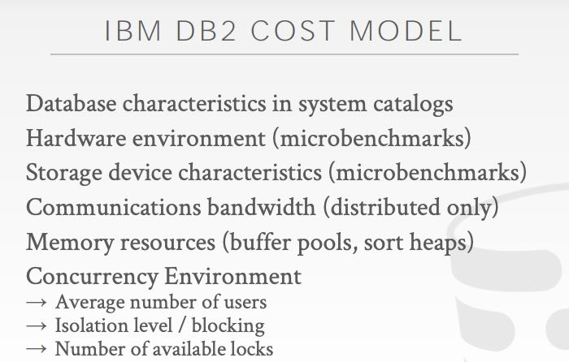

CMU DB: Query Planning
https://15445.courses.cs.cmu.edu/fall2020/schedule.html
Logical Plan & Physical Plan: 逻辑计划可以认为就是解析生成的AST，在这个AST上可以看到执行意图，有点类似于高级语言；物理计划则涉及到具体执行，比如A join B join C join D on … 的话，可以(A join B) join (C join D)这样的顺序，又或者是其他具体的执行顺序，有点类似汇编语言。总之逻辑计划强调what, 物理计划则比较强调how. 一个逻辑计划可能有多种物理计划，如何找到最优的物理计划（执行时间短，又或者是资源开销低等等目标），就是查询优化器要做的事情了。

通常优化器做优化有两类方法：
- heuristics / rules 启发式或者是基于规则进行优化，比如where 1=1 或者是 where a > 50 & a < 25，又或者是pushdown predicate等等。这个优化都可以在AST上直接完成。可以类比为在对编译器中间语言进行优化。
- cost-based search 基于代价的搜索。我的理解是，一个逻辑计划可能有多个物理计划，每个物理计划可以根据数据计算出cost, 然后比较哪个物理计划的cost比较低。可以类比为在为中间语言match到最优的机器指令序列。
查询优化是NP-Hard问题，这里有篇IBM使用LEO来自动做查询优化的文章 https://ieeexplore.ieee.org/document/5386840 这个领域非常具有挑战性，同时商业价值也非常的大。
Andy在课堂里面提到mongodb做查询优化的办法，缺少细节但是有启发性：在选择物理计划的时候，直接将所有的物理计划丢给后端去查询，然后看谁先返回。之后一段时间类似的查询，有使用这种类似的物理计划。暴力但是非常有效。
通常Cost选择集中在Hardware Resource方面：CPU/Mem/IO/Network. 下面两张图片是Postgres和DB2 的cost model
 
通常数据库表会维护各种statistics，来辅助优化器进行索引选择。所以索引选择，主要的指标就是selectivity, 也就用这个index做查询，能不能尽可能低返回少的数据，越少的数据意味着少的资源开销。stats可以有好几种：histograms, under-sampling tables, sketches(count min sketch & HyperLogLog). 用少量的数据就可以表达更大数据集合的特征。
在选择最优物理计划时，可以下面几种情况考虑：
- single relation. 单表查询，选好索引，以及pushdown predicate 即可，大部分情况效果很好，这也是大部分OLTP系统的操作。
- multiple relations. 多表JOIN，这个放在后面说。
- nested sub-queries. 可以转化为多表查询(flatten), 或者是创建中间表(decomposition).
多表JOIN在OLAP中尤为常见，课堂上说snowflake号称可以对上千个table做JOIN，也不知道真实情况有没有这么使用的。但是30-50个tables做join可能会是比较常见的。多表查询有下面几个变化引子：
- JOIN 顺序，假设有N个表，可以考虑一下有多少种二叉树的可能。
- JOIN 实现，Hash, Sort-Merge, Nested Loop(NL)
- 每个表中使用那个索引还是顺序扫描
这些组合的数量会非常庞大，对于每个组合我们还是使用上面的cost-based model计算出一个cost, 选择最优的。但是如何对组合数量剪枝则是个很大的问题，postgresql有两个办法：DP和遗传算法。对于<12个tables的join使用DP算法（不清楚怎么DP，怎么裁剪成为子问题也是蛮难的），对于>=12个tables的join使用遗传算法试图找到局部最优解。